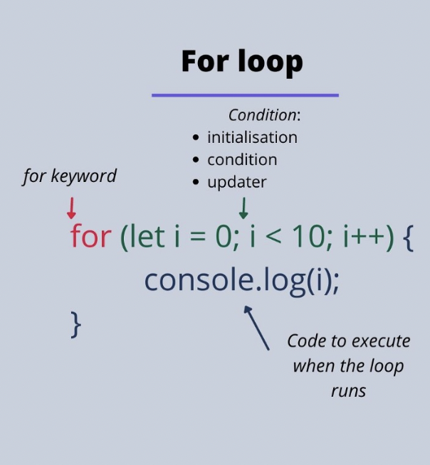
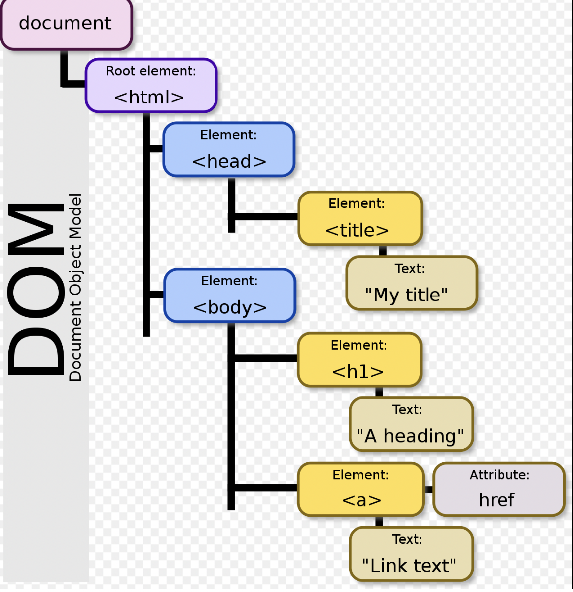

What is JavaScript
JavaScript is the Programming Language for the Web.
JavaScript can update and change both HTML and CSS.
What is Control flow?
Control flow in JavaScript is How your computer runs coide from top to bottom.
It start from the first line and ends at the last line, unless it hits any statement
that changes the control flow og the program such as loop, conditionals, or fnction.
What is loops?
Loops are handy, if you want to run the same code over and over again,
each time with a different value.
How to use?
Statement 1
Executed (one time) before the execution of the code block.
Statement 2
Defines the condition for executing the code block.
Statement 3
Executed (every time) after the code block has been executed.

What is DOM?
When a web page is loaded, the browser creates a Document Obeject Model of the page.

How JavaScript interacts woth the DOM?
Whit the object mopdel, JavaScript gets all the power it needs to create dynamic HTML:
JavaScript can change all the HTML elements in the page.
JavaScript can change all the HTML attributes on the page.
JavaScript can change all the CSS style in the page.
Let's find in our daily
It's weekend. , It is my today plan.
but if something happen, the plan is changed! Let's look!
: If I won't complete until 2pm,( I will ask friend if can change dinner time.)
IF WE CAN, CHANGE TIME TO 7PM. IF NOT, CANCEL DINNER AND OPPOINTMENT OTHERDAY.
Objects vs. Arrays
Both objects and arrays are considered "special' in JavaScript.
Objects represent a special data type that is mutable and can be used to store a collection of data
(rather than just a single value.
Array are a special type of vatiable that is also mutable and can also be used to store a list of values.
What is Function?
A functiuon in JavaScript is similar to a procedure -
a set of statements that performs a task or calculates a value,
but for a procedure tp qualify as a function, it should take some input and return an oputput
where there is some obvious relationship between the input and the output.
Why functuons are helpful?
As the amount of programming increases, the number of codes increases, and the same codes are often duplicated.
Copying the code every time it happens makes it harder to maintain later.
Functions provide the ability to reuse code. That's why functions are so useful.

So I made a function "f()" and changed letter of variable "abc".
finally I can always use f()of function with changed letter of "abc"variable.
*Speed up your development and save your valuable time!*
1. Horten the console log.
2. Merge two array into one
3. Merge two odjects into one
4. Shorten an array
5. Shuffle an array
6. Use isNum TO VERUIFY A NUMBER
7. Use isStr to verify a string
8. Use isNull
9. Calculate the performance of a functiuon
10. Remove duplicates from an array
11. Use loigucla AND/OR for conditions
12. Ternary operator